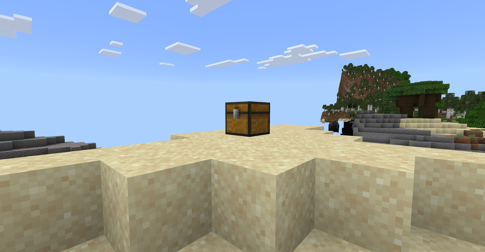
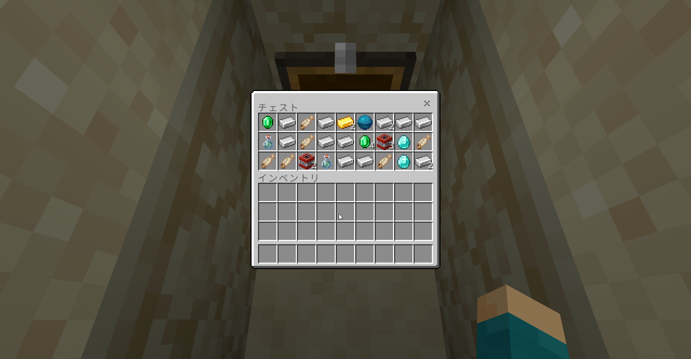

{ "block": { "typeId": "minecraft:chest" },
"container": { "size": 27, "emptySlots": 0,
"items": [
{"slot": 0, "typeId": "minecraft:emerald", "amount": 1},
{"slot": 4, "typeId": "minecraft:gold_ingot", "amount": 2},
{"slot": 5, "typeId": "minecraft:heart_of_the_sea", "amount": 1},
…
{"slot": 16, "typeId": "minecraft:diamond", "amount": 1},
…
{"slot": 25, "typeId": "minecraft:diamond", "amount": 1},
… ] 27 スロットすべてが返る（ここでは一部）
} }